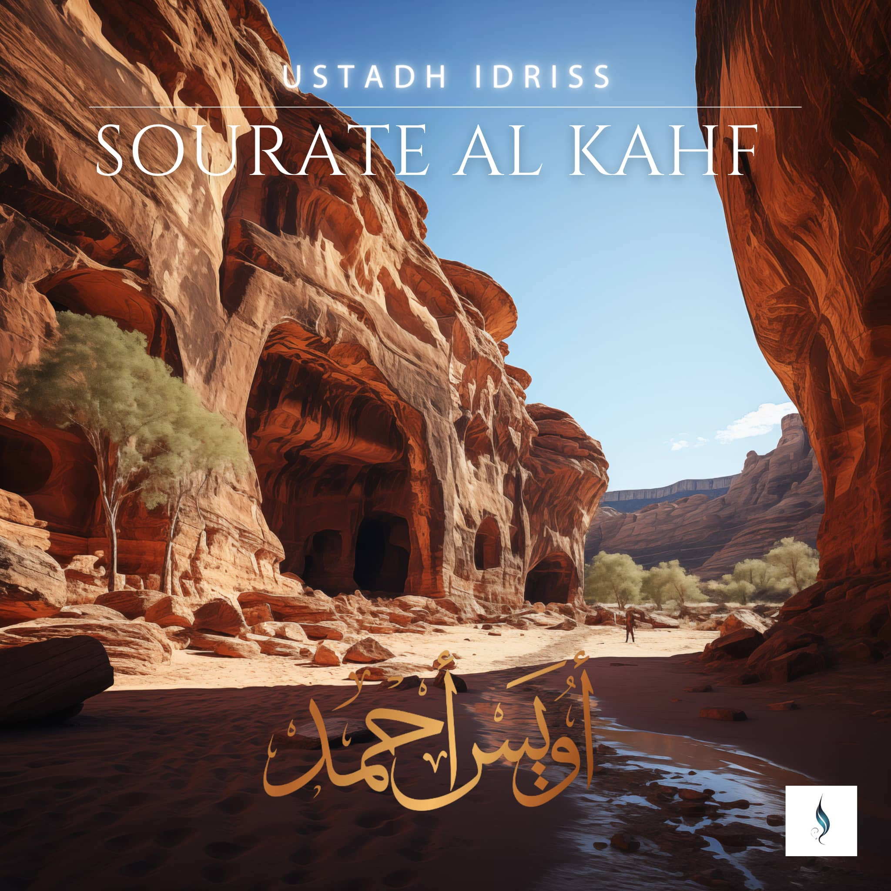
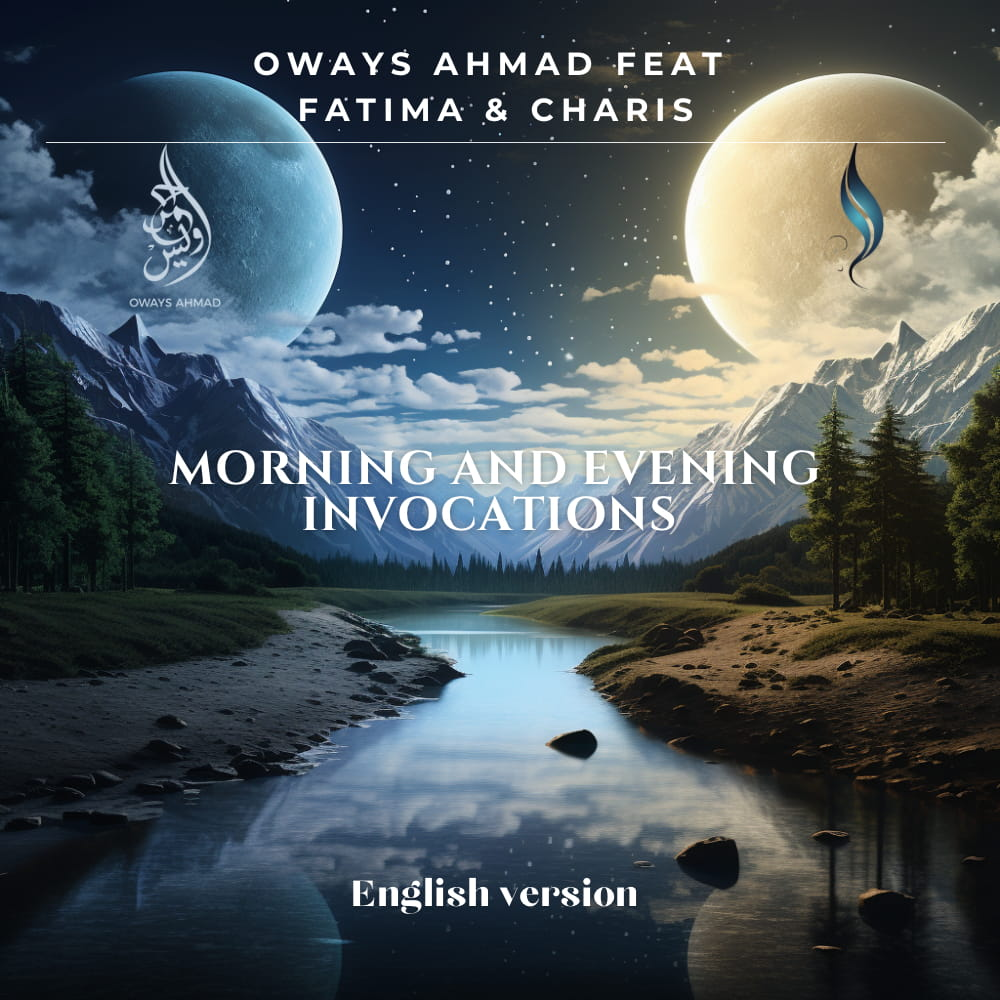
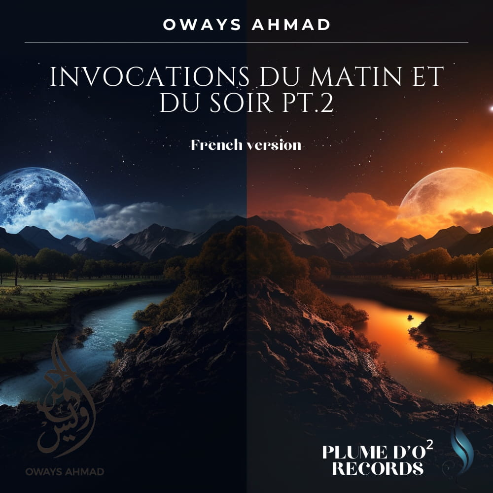
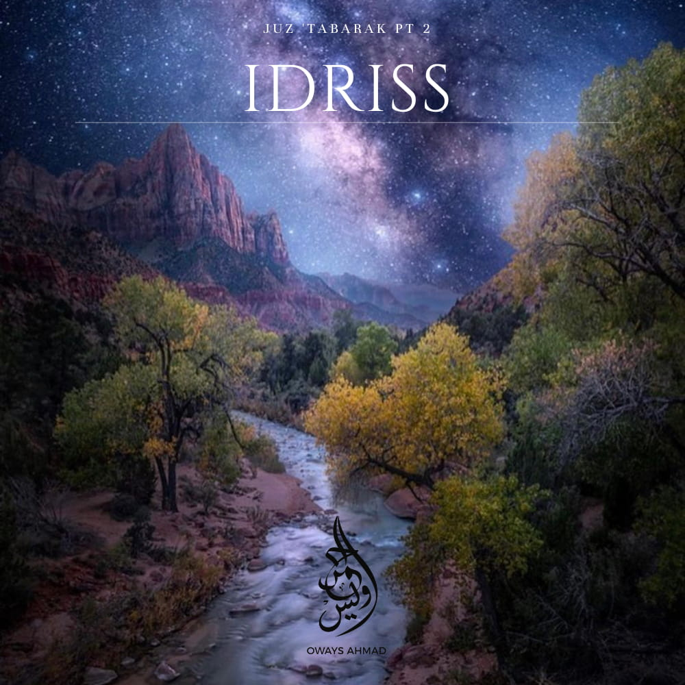
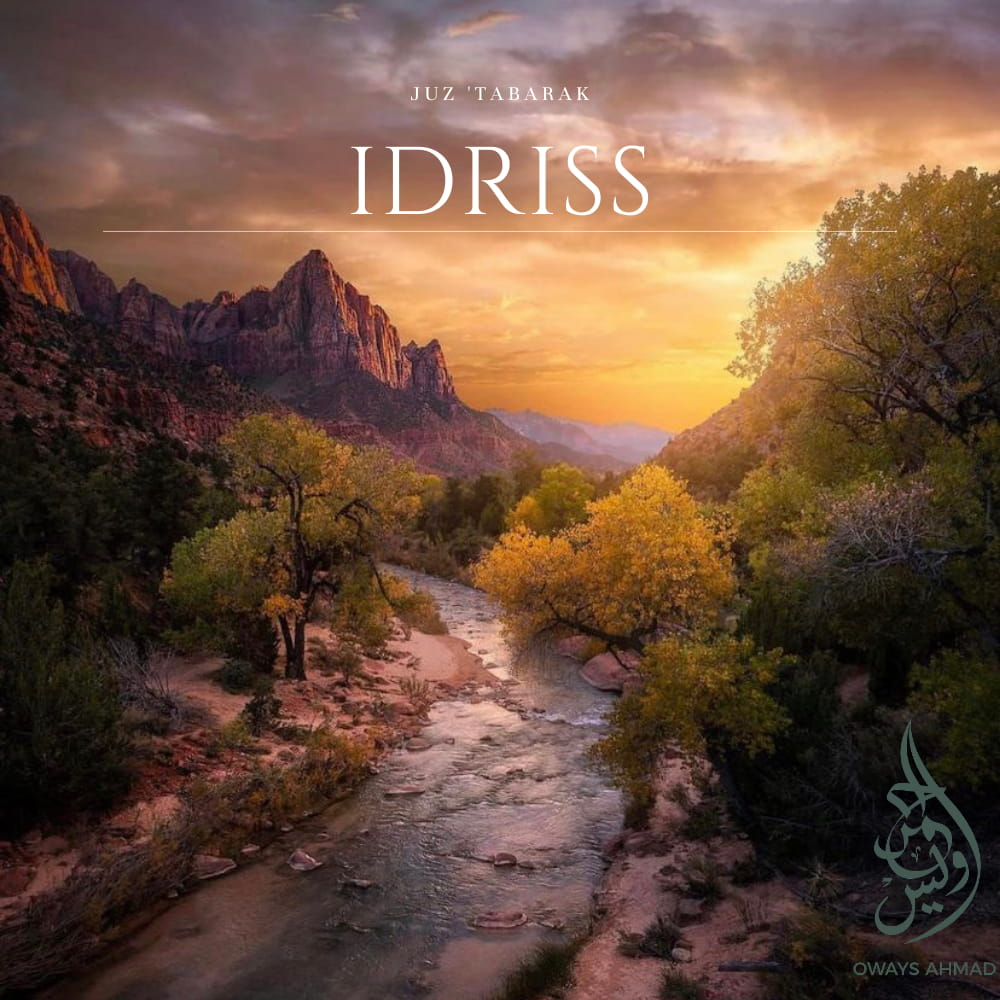
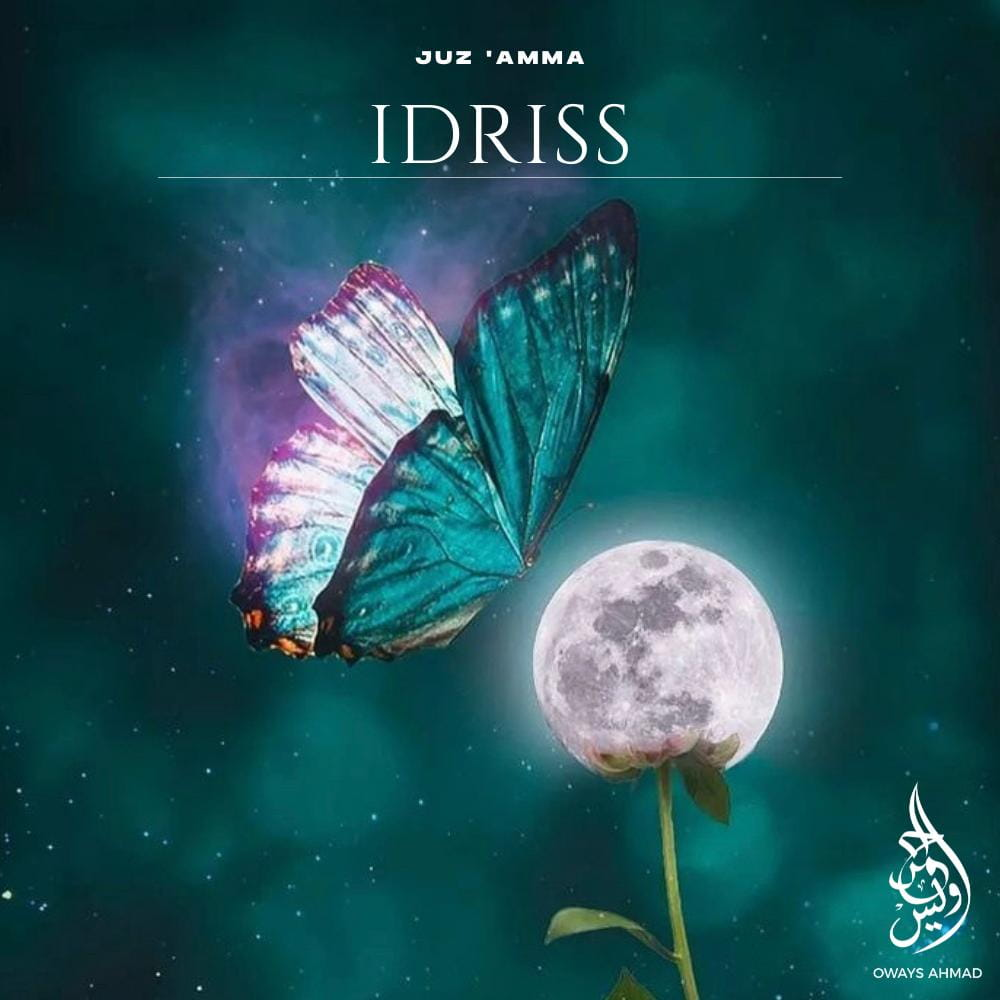
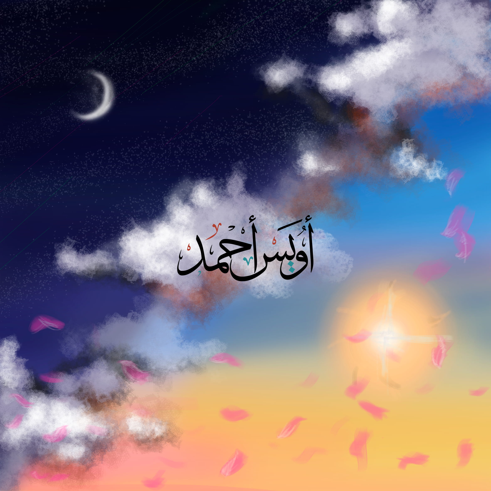

← Retour à l'accueil
Écouter
Toute la discographie de Plume d'O² — récitations coraniques, invocations et méditations audio.
Méditations Quotidiennes
Des méditations guidées pour nourrir l'âme. Un nouvel épisode toutes les deux semaines.
Prochainement
Les Invocations des Prophètes
Toutes les invocations (Duaas) prononcées par les prophètes, tirées exclusivement du Saint Coran. À venir très bientôt sur toutes vos plateformes.


Discographie
10 projets · 2021 — 2025

EP2025
Sourate Al Kahf
Ustadh Idriss

2025
Morning and Evening Invocations
Oways Ahmad feat Fatima

2024
Invocations du Matin et du Soir Pt.2
Oways Ahmad
2023
Juz Tabarak Pt.1
Ustadh Mounir Ezzaraoui

2023
Juz Tabarak Pt.2
Ustadh Idriss

2022
Juz Tabarak Pt.1
Ustadh Idriss
2023
Juz 'Amma Pt.2
Ustadh Muhammad Marega
2022
Juz 'Amma Pt.2
Ustadh Mounir Ezzaraoui

2022
Juz 'Amma Pt.2
Ustadh Idriss

2021
Invocations du Matin et du Soir
Oways Ahmad
Récitations
Plongez dans l'univers sonore de Plume d'O²